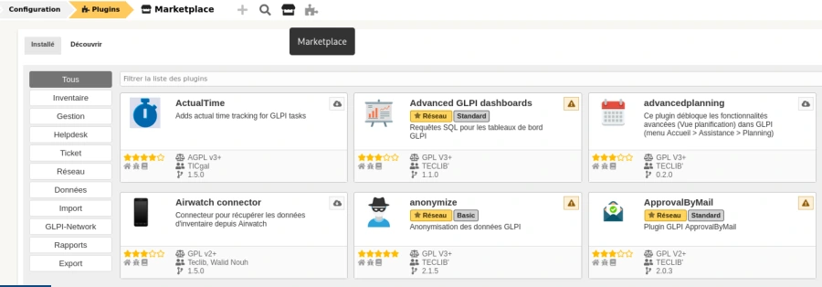
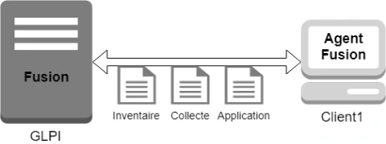
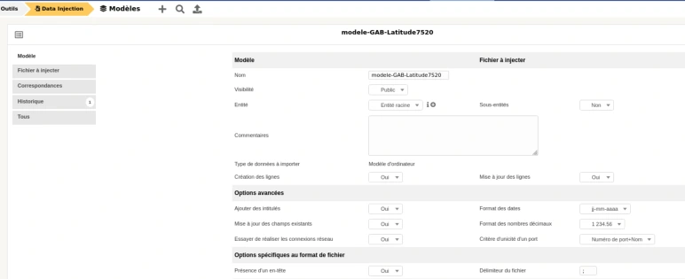
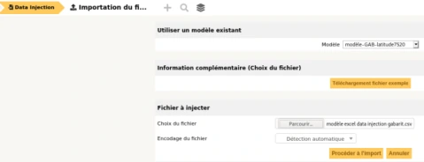

Transcription fidèle du support de formation, avec mise en forme adaptée à la lecture. Les identifiants secrets du laboratoire sont remplacés par une indication du formateur ; les coquilles techniques sont expliquées séparément dans le cours optimisé.
Administration GLPI
Module 06 – Présentation des plug-ins – Inventaire avec
FusionInventory
Objectifs
Comment ajouter/gérer des plugins avec GLPI
Exploration du site https://plugins.glpi-project.org/
Comment installer le plugin FusionInventory pour GLPI
Installation d’un agent FusionInventory sous Windows
Savoir modifier la configuration de l’agent FusionInventory
Comment forcer un inventaire depuis un agent
Installer le plugin Data-Injection en vue d’importer des données
Paramétrer un modèle d’importation Data-Injection
Présentation des plug-ins
Les plug-ins : présentation
Étendre les possibilités de GLPI sans modification du produit de base
Catalogue: « https://plugins.glpi-project.org »
* Domaines traités
Depuis la version 9.5, il est possible d’utiliser le Marketplace (inscription sur le site obligatoire)
Principaux domaines :
Rapports / Graphiques
Inventaire *
Réseau
Gestion administrative
HelpDesk *
Import
Les plug-ins : installation manuelle
Récupération des sources au format Gzip ou Bzip2
Extraction des plug-ins : « GlpiInstallationDir/plugins »
Installation et activation depuis l’interface graphique : « Configuration => Plugins »
Chemin d’accès de configuration du plugin : va dépendre du plugin
Une version de plugin pour une version ou plus de GLPI
La mise à jour de GLPI peut nécessiter une mise à jour du plugin
Paramétrage du Marketplace
Inscription gratuite sur le site https://services.glpi- network.com/register afin de récupérer une clé d’enregistrement
Puis la coller dans la section Configuration→Générale de GLPI :
Les plug-ins : installation par le Marketplace
Plugin FusionInventory

Visuel isolé — Module 06 - Support de cours
FusionInventory Présentation des plug-ins – Inventaire avec FusionInventory
Plugins dans GLPI => la partie serveur
Les clients FusionInventory agents : Windows/Linux/macOS/Android
Permettre un inventaire automatique des équipements
Déploiement en mode Push / Pull d’applications
Collecte de données
Inventaire distant SNMP
Découverte réseau
Wake-on-LAN
FusionInventory : vue d'ensemble
Modèle client / serveur
Le client communique à intervalle régulier avec son serveur
Le serveur peut réveiller le client pour une communication anticipée
Données d’inventaire, remontée d’information de collecte, etc.
Protocole HTTP : documents XML

Visuel isolé — Module 06 - Support de cours
FusionInventory : préparation inventaire
Nécessité de préparer la partie serveur avant toute importation de clients
Comment gérer l’affectation des lieux et entités aux objets inventoriés ?
Comment maintenir une relation cohérente utilisateur <=> ordinateur
Inventaire automatique par défaut très volumineux => limitation nécessaire
Définition d’une liste noire
Dictionnaires Administration =>
Règles fusion Administration => Fusion =>
Dictionnaires
Règles
FusionInventory : règles Présentation des plug-ins – Inventaire avec FusionInventory
« Règles d’informations d’ordinateur »
À chaque update, modifier des informations ordinateur en fonction d’information de collecte
« Règles de lieu »
Permettre l’affectation et modification automatique du lieu des équipements importés par Fusion
« Règles sur l’entité ordinateur »
Permettre l’affectation et modification automatique de l’entité de rattachement
« Règles d’import et de liaison des matériels »
Liste fixe – Identification précise des machines à mettre à jour ou importer – éviter les doublons
« Matériels ignorés durant l’import »
Liste des équipements n’ayant pas pu être importés suite à une découverte réseau
Pour aller plus loin : Plugin Data Injection
Data Injection Présentation des plug-ins – Inventaire avec FusionInventory
Il permet d’injecter des données depuis un fichier .csv
Comme dans la création à la main, l’ordre de création est important
Par exemple, création d’un fabricant, puis d’un composant et enfin l’ordinateur
Attention :
Aux droits des utilisateurs qui utilisent l’injection
Si l’utilisateur n’a pas le droit de créer un composant, il ne sera pas créé
Si vous utilisez FusionInventory, est-il indispensable d’injecter vos données ?
Data Injection
Ce qu’on peut importer
Ce qu’on ne peut pas importer
Logiciel
Versions de logiciels
Licences
Données relations au helpdesk (catégories, tickets)
Données relatives à la base de connaissance
Ordinateur
Écran
Imprimante
Matériel réseau
Téléphone
Périphériques
Composants
Utilisateur
Groupe
Entité
Contrat
Fournisseur
Contact
Informations financières
Ports réseau
Type de cartouche
Type de consommable
Documents
Data Injection
Étape 1 – La création d'un modèle

Visuel isolé — Module 06 - Support de cours
Data Injection
Étape 2 – Injecter un fichier au format .csv avec vos en-têtes de colonne
UTF-8 pour un fichier venant de Linux
ISO8859-1 pour un fichier venant de
Windows
Data Injection
Étape 3 - Correspondance de vos en-têtes de colonne avec les champs des différentes tables
Visuel isolé — Module 06 - Support de coursVisuel isolé — Module 06 - Support de cours
Data Injection
Étape 4 - Procéder à l’importation avec votre fichier rempli

Visuel isolé — Module 06 - Support de coursVisuel isolé — Module 06 - Support de cours